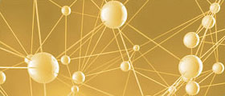

Synapse Partners
Synapse is, an incubator and strategic investment holdings company, focusing exclusively on the disruptive technologies and the business models in Information Communications and Energy (“ICE”) technologies domains that will create an entire new converged market opportunities among ICE technologies spaces thus will disrupt the existing markets.
Synapse redefines the new incubation concept to create the perfect cultivating ground for technology venture start-ups.
Synapse creates synergies and business opportunities among portfolio companies and with the leading players in each domain thus increasing companies’ chances for success and allowing them to leverage on their local experiences from each market to expand for other regions throughout Synaptic Global Network.
ABOUT
Where Synapse origin from
Portfolio Ecosystem Value Chain
There are over one hundred billion nerve cells in human brain and approximately fifteen billion cells in cerebral cortex which are used for the five senses of human being. The nerve cells are connected by extending its projections. Therefore, this junction of two nerve cells is called Synapse and the origin of this word from Greek.
Information Distribution Hub
The information in analogue signal format, which is transferred from the five senses to the human brain, can be converted to the digital signal format that carries on information distribution hub among the cells.
Hybrid Networks
When human being is born, it is only combined two Synapses. Age at adult, it will be combined over 2000 synapses and there are 100 billion nerve cells in the brain therefore, each combination of nerve cells network.
Plasticity Evolvement
Synapse is not only equipped with a simply carry out the transmission of on/off digital signals, but also coordinates and regulates the transmission level and flexibly evolving itself depending on the surrounding environment.
About US or Our Concept
- Synaptic Global Network
- Portfolio Ecosystem Value Chain
- Alterable Organism on varying environmental conditions
Synapse aims to be the alterable organism & strategic investment holding company with selected portfolio ecosystem that are under the convergence of all vertical industries especially in Information Communication & Energy (“ICE”) technologies arena. Synapse will also attain to from the Synaptic Global Network in ICE technologies domain, which is underlying its information distribution Hub, by plastically being evolved according to varying global environmental conditions.
Synapse strives to serves portfolio companies who are requiring incubation, cultivation and support in IT Service, ICT, Cloud Computing Platform Technologies, Advanced Pervasive Technologies and Energy & Clean Technologies in ICE technologies spaces.
Synapse will incubate and or cultivate seeds stage portfolio companies by providing supper hands-on supports in all areas from technological know-how, strategy-building, networking, strategic alliance, marketing, financing, business development and operations etc.
Fully leverage the combined strength of strategic corporate partners, existing portfolios group, fellow investors and our management partners to boost their growth, thus enhance their performance and to speed up series of the exit strategies, as the entire strategic investment ecosystem value chain.
Targets market also shifts from developed countries to Base of Pyramid (“BOP”) in BRICs and VISTA, but mainly targets emerging market in Asia Pacific regions.
PEOPLE
Synapse’s multidisciplinary professional team with operational expertise will leverage their extensive business experience and entrepreneurship skills by sharing the vision of each entrepreneur and management team from portfolio companies.
Synapse is the alterable organism team to manage the strategic investment portfolio by project by project independently. Other than those partners and associates listed here, there are many affiliates partners and associates, who used to work with us and will also join a team underlying partnership bases. Organization and formation model is learned from jam session in Jazz thus a leading professional partner will organize a team with other fellow professionals from each space depends on the unique needs from each project.
Yoshihisa UENO
Founding Partner
Mr. Ueno, the founding partner and based in Hong Kong, founded and solely owned the firm since its inception in Jan 2003. He is a serial entrepreneur & an independent venture capitalist with over twenty eight years proven operational and industrial experience in US, China and Europe. He has extensive global management & entrepreneurial operation experience and focusing start-ups in the ICE technologies domains.
Mr. Ueno has been the founder & Chairman of the Board Director of Synapse Partners Group companies such as Synapse Partners Ltd and SMC Synapse Partners Limited. Currently serves Synapse’s active portfolio companies as the Board of Director such as 21Vianet Group Inc. (NASDAQ:VNET), Insource (HK) ltd., Biomass Energy Corporation, Liya Education Holdings (HK) Ltd., aBitCool, Inc., Neudia Holding Limited, Be4Technology Limited, TransVirtual K.K, then served for CDC GS Japan Ltd (JV with CDC Corp. NASDAQ:CHINA), BeyondSoft Group Holding Limited (SZSE: 2649) and SmileJet Co., Ltd. in the past.
Mr. Ueno also currently serves as Investment Committee Member of Beijing Yi Zhuang Smart Cloud Investment Center L.P., and Limited Partner of New Industry Creation Investment L.P. (Tmsuk Co., Ltd.) and IP IP Investment Industrialization #1 Investment L.P.(IP Power Systems K.K. and Biomass Energy Corp. etc.).
As a part of strategic alliance with Synapse, Mr. Ueno was managing several venture funds such as the Japan-China Bridge Fund as Venture Partner, Intellectual Property Bank (IPB) Partners Fund #1 in Japan and IPB Holding LLC in the United States as General Partner.
Prior to founding Synapse, Mr. Ueno also served as CEO and a principal investor, Cycolor, Inc. in USA, a renowned company, owning over 260 patents in digital imaging industry, and cited in 1989 by Popular Science magazine as one of the top-100 innovation companies in science and technology. Mr. Ueno has transformed the company into a viable organization, by employing a series of restructuring and fund-raising programs resulting in over US$80 million in equity and debt investment and the formation of strategic partnerships with several leading Fortune 300 companies. Cycolor was acquired by Eastman Kodak in early 2003 as one of largest multi-million IP transaction at the time.
Mr. Ueno used to work for Fujitec, from April 1985 to May 1997, in various managerial capacities in Japan, China, the United Kingdom, Spain and Hong Kong, and was responsible for the overall management of those overseas operations. Mr. Ueno received his bachelor’s degree in business administration from Takushoku University. . While a student, Mr. Ueno was a member of the University’s renowned Karate club, winning for the university several team championships in national contests.
Jonathan Chu
Founding Partner
Mr. Chu, the founding partner and based in NJ, USA. He is an serial entrepreneur with a start-up veteran and innovative executive with intensive experience of building and providing leadership to marketing, business development, technology and consulting groups selling to global organizations.
Vincent Win
Partner
Mr. Win is a private equity investor and entrepreneur based in Silicon Valley. His investment areas include digital media ecosystem, sustainability, and growth sectors with potential for cross-border collaboration or global expansion. He also actively advises portfolio companies on corporate strategy, value creation, and performance velocity.
Toru MIO
Venture Partner
Mr. Mio is the venture partner and based in Tokyo. He has over 26 years of investment banker and private equity & venture capital investment experience with outstanding corporate banking track record globally as well as extensive networking all over the world.
Wu Yong Zhi
Entrepreneur in Residence
Akiyoshi FUKUMITSU
Entrepreneur in Residence
STRATEGY
Synapse has a unique strategic investment focus in ICE technologies domains and targets the technology start-ups, who are operating in Asia Pacific regions and capable to:
-Create new-wave of industry in ICE technologies spaces including IT service, ICT, Cloud Platform Technologies, Advanced Pervasive Technologies, Energy and Clean technologies;.
- Leap-frog from “a local player” to “a pure global de-facto player” with a premium applications, services and products based on its disruptive core & base technologies;
-Speed up and strength in Asia Pacific development within the ICE technologies domains;
-Mainly Chinese and Japanese companies who are seeking cross border expansion with the proven disruptive core & base technologies, service applications, an unique business model and know-how in the ICE domains;
-Holding the IP based disruptive core-technologies that are seeking partners in the emerging market then deploy over the top of applications, services and products based on those disruptive core & base technologies.
Synapse promotes cross boarder integration between a corporate has a disruptive core technologies manly from developed and matured markets and the other corporate has more rapid growing potential market in the same domain, but they require to improve additional value and move up the value chain in order to enhance the corporate value. Two corporates will be two engine wheels, like bread & butter as well as the operating system & applications in software space, thus they will be eventually integrated into the single eco-system business model with multiple greater value.
(The term of technology is the process that any company uses to convert inputs of labor, materials, technique, know-how, capital, energy and information into output of greater value.)
Synapse promotes cross boarder integration between a corporate has a disruptive core.
ROLE & STAGE
Synapse intends to become a leading value added provider with customized solutions.
Start-up and Incubation Capital
Business Development
Strategic Alliances
Financial Engineering and High level Access to over 30 top VCs & Investment Banks
Access to Innovative Technologies and Business Process/Model
Professional Hands-on Services assistance
Stage By Stage, Synapse Role
PORTFOLIO
Synapse has been in a lead investor of 21ViaNet Group, Inc. (NASDAQ:VNET) since 2006 and brought successful NASDAQ IPO April 2011. VNET is a China largest carrier-neutral Internet Data Center & Cloud Computing infrastructure company.
Other than direct investment, Synapse also strategically invested in the other partnerships and founds as a limited partner, too. Synapse is a leading limited partner of Intellectual Property Investment Fund #1, of which investment is mainly at the invention stage of patents and technologies then toward its industrialization of these patents & technologies are conducted. Focused sectors are Eco Mechanical & Electrical Material, Life Science and Nano-Bio technologies since 2003. Several portfolios are leading clean technologies ventures in Japan, such as IP Power Systems which is a Electric Power Receiving and Distribution Management System for Large Multi-Unit Dwellings with the proprietary smart meters and information networks for the residents of multi-unit dwellings with low-cost electric power. Biomass Energy Corp. provides core technologies of Biomass utilization for power generation and liquid fuels synthesis of chemical/Methanol production plants.